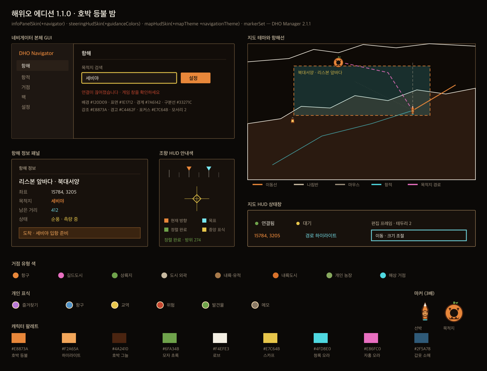

DHO PORT 제공
해위오 에디션 1.1.0
호박 등불 밤
짙은 야간 배경과 호박색 강조, 지도·항해선 테마, 조향 HUD 안내색, 네비게이터 GUI와 전용 SVG 마커 3종을 하나의 팩에 담았습니다.
다운로드 후 DHO Navigator의 메뉴 → 팩 → 팩 추가에서 `.dho-pack` 파일을 선택하세요.
Community resource pack
DHO PORT가 제공하는 첫 화면 테마입니다. DHO Manager 2.1.1 이상에서 팩을 설치하면 지도, 항해선, HUD와 네비게이터 GUI가 함께 바뀝니다.

호박 등불 밤
짙은 야간 배경과 호박색 강조, 지도·항해선 테마, 조향 HUD 안내색, 네비게이터 GUI와 전용 SVG 마커 3종을 하나의 팩에 담았습니다.
다운로드 후 DHO Navigator의 메뉴 → 팩 → 팩 추가에서 `.dho-pack` 파일을 선택하세요.
5분 빠른 시작
처음에는 작은 팩부터 시작하세요. 같은 팩을 수정할 때는 `packId`를 유지하고 버전만 올리면 관리하기 쉽습니다.
제작자 ID, 이름과 버전을 입력합니다.
추가 거점이나 HUD 색상을 선택합니다.
브라우저가 해시와 ZIP을 자동으로 만듭니다.
팩 메뉴에서 검사한 뒤 구성요소를 적용합니다.
브라우저 생성기
추가 거점부터 지도 색상, 항해선·항적선, HUD와 네비게이터 GUI 테마까지 한 팩으로 만들 수 있습니다. 기존 거점 ID를 바꾸거나 해안선 데이터를 만드는 작업은 아래 고급 제작 안내를 이용하세요.
고급 제작
API 문서는 필드의 의미와 제작 판단을 설명하고, JSON Schema·완성 예제·Node 검증기는 사람과 AI가 같은 결과를 재현하게 합니다.
mapData는 16384×8192 좌표계와 폴리곤 위상 검증이 필요합니다. 검증된 데이터 제공자가 제작하는 용도입니다.
PNG·WebP·정적 SVG를 사용할 수 있지만 크기, 헤더, 외부 참조와 스크립트 검사를 통과해야 합니다.
좌표 대체와 숨김은 안정된 내장 poiId가 필요합니다. 잘못된 ID는 팩 전체가 거부됩니다.
/llms.txt 하나에서 규격, Schema, 예제와 검증 명령을 모두 찾을 수 있습니다. 최종 판단은 항상 공개 검증기로 합니다.
| 거점 유형 | 용도 | 좌표 역할 권장 |
|---|---|---|
| port | 항구·도시 | 항해 가능 |
| landing | 상륙지 | 항해 가능 |
| inland_city | 내륙도시 | 표시 전용 |
| outskirts / inland | 도시 외곽·내륙 유적 | 표시 전용 |
| sea | 해상 거점 | 항해 가능 |
DHO Navigator의 메뉴에서 팩 탭을 열고 `.dho-pack`을 선택합니다. 검사 결과를 확인한 뒤 원하는 구성요소를 적용하세요.
제작자 ID와 팩 ID는 유지하고 버전을 올리세요. 예: `0.1.0` → `0.1.1`.
리소스팩은 선언형 데이터와 정적 자산만 허용합니다. 다른 사용자의 PC에서 임의 코드가 실행되지 않도록 하기 위한 제한입니다.
Manager의 팩 검사 메시지와 함께 공개 저장소 Issues에 문의해 주세요. 계정 정보나 개인 로그는 첨부하지 마세요.
도착 · 런던 입항 준비